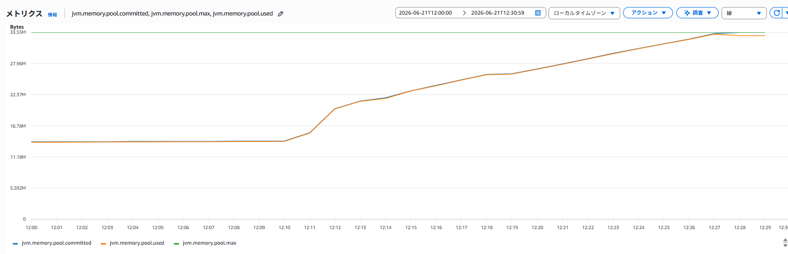
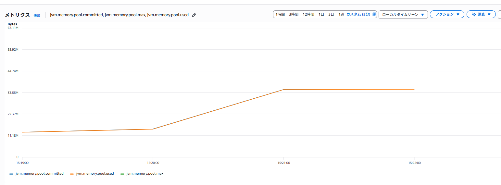
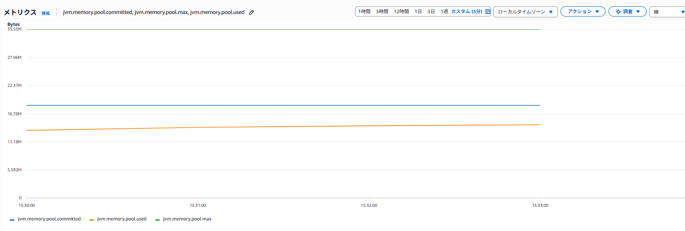

JVM Code Cacheの検証
1 検証の目的
JVMのCode Cacheを意図的に満杯にし、JITコンパイル停止前にコンパイルされた処理と、停止後に 初めて実行する処理の応答時間を比較する。また、Code Cacheの使用量と上限をCloudWatchで 監視できることを確認する。
事前の仮説は次のとおりである。
- Code Cacheが満杯になるとJITコンパイラが停止する。
- 満杯になる前にコンパイルされたHot処理は、満杯後もコンパイル済みコードを利用できる。
- 満杯後に初めて呼ぶCold処理はJITコンパイルされず、Hot処理より遅くなる。
- Code Cacheの上限を増やすと、同じ負荷で満杯になるまでの余裕が増える。
Code Cache、JIT、Tiered Compilationの仕組みは、別ページの JVM Code Cacheの仕組みを参照する。
2 検証環境
| 項目 | 内容 |
|---|---|
| 検証日 | 2026-06-21 |
| AWSリージョン / AZ | ap-northeast-1 / ap-northeast-1c |
| EC2 | t3.micro、x86_64、2 vCPU、メモリ約1GiB |
| OS | Ubuntu 26.04 LTS |
| CPU | Intel Xeon Platinum 8175M 2.50GHz |
| Javaディストリビューション | Ubuntu OpenJDK 64-Bit Server VM |
| Javaバージョン | OpenJDK 21.0.11 |
| アプリケーション | Spring Boot code-cache-demo 0.0.1-SNAPSHOT |
| Git commit | 93dcc73a64da1d3280c9a66f5d866517bd34f200 |
| CloudWatch Agent | 1.300069.0b1529 |
| 負荷生成方法 | 検証profile限定Generator APIで異なるクラスを1,000個ずつ生成 |
| 負荷量 | 1クラス当たり10,000回実行、32MB試験では合計16,000クラス |
環境情報は次のコマンドで確認した。
cat /etc/os-release
lscpu
free -h
java -version
git rev-parse HEAD3 検証アプリケーション
検証用APIはSpring profile code-cache-testを有効にした場合だけ利用できる。
| API | 役割 |
|---|---|
POST /code-cache/generator/generate |
異なるクラスとメソッドを生成し、JITコンパイルを促す |
GET /code-cache/probe/hot |
満杯前にwarm-upする固定メソッド |
GET /code-cache/probe/cold |
満杯後まで呼ばない、Hotと同じ計算内容の別メソッド |
GET /code-cache/generator/status |
JVM内で生成したクラス数を確認する |
Generator、Hot、Coldを分離した理由は、Code Cacheを圧迫する処理と、遅延を測定する処理を 同じメソッドにしないためである。HotとColdは同じ入力と計算式を使い、Java上では異なるメソッドとして 実装している。
4 検証条件
4.1 32MB Code Cache
-XX:ReservedCodeCacheSize=32m
-XX:-UseCodeCacheFlushing
-Xlog:codecache*=warning
-Dcom.sun.management.jmxremote
-Dcom.sun.management.jmxremote.host=127.0.0.1
-Dcom.sun.management.jmxremote.port=9010
-Dcom.sun.management.jmxremote.rmi.port=9010
-Dcom.sun.management.jmxremote.local.only=true
-Dcom.sun.management.jmxremote.authenticate=false
-Dcom.sun.management.jmxremote.ssl=false
-Djava.rmi.server.hostname=127.0.0.1
--spring.profiles.active=code-cache-test主要なオプションの意味は次のとおりである。
| オプション | 目的 |
|---|---|
ReservedCodeCacheSize=32m |
Code Cacheの最大容量を32MBに固定する |
-UseCodeCacheFlushing |
Sweeperによる通常回復を無効にし、満杯状態を維持する検証専用条件 |
-Xlog:codecache*=warning |
満杯とコンパイラ停止のwarningをログへ出す |
| JMX 9010 | CloudWatch AgentがJVMメトリクスを取得する。localhost限定で外部公開しない |
code-cache-test |
GeneratorとHot/Cold APIを有効にする |
-Xcompはすべてのメソッドを強制コンパイルし、HotとColdの差を確認する試験条件を変えるため使用しない。 また、-XX:-UseCodeCacheFlushingは通常運用の推奨値ではなく、満杯状態を確実に維持するためだけに使う。
5 CloudWatch監視条件
CloudWatch AgentはlocalhostのJMX 9010から、次の3メトリクスを60秒間隔で収集した。
| グラフの色 | JMXメトリクス | 確認する項目 |
|---|---|---|
| 青 | jvm.memory.pool.committed |
committed（JVMが利用可能として確保済みのCode Cache容量） |
| 緑 | jvm.memory.pool.max |
max（Code Cacheの最大容量） |
| オレンジ | jvm.memory.pool.used |
used（現在使用中のCode Cache容量） |
JVMログはCloudWatch Logsの/code-cache-demo/applicationへ送信した。JMX標準メトリクスでは full_countやJITコンパイラの停止状態を取得できないため、CloudWatchのused、max、committed、 JVM warningログ、 jcmdを組み合わせて判定した。
6 検証方法
最初にHotだけを100回warm-upした。Coldは満杯になるまで一度も呼ばなかった。
for i in $(seq 1 100); do
curl -fsS \
'http://localhost:8080/code-cache/probe/hot?count=100000' >/dev/null
doneGeneratorで1,000クラスずつ追加し、各batch後にCompiler.codecacheを確認した。CloudWatchの 60秒samplingで段階的な値を残すため、batch間を65秒空けた。
for i in $(seq 1 20); do
curl -fsS -X POST \
'http://localhost:8080/code-cache/generator/generate?classes=1000&warmupIterations=10000'
jcmd "$PID" Compiler.codecache
sleep 65
donefull_count > 0またはCompilation: disabledを検出した時点でGeneratorを停止し、HotとColdを 同じcount=1,000,000で1回ずつ測定した。
curl -fsS \
'http://localhost:8080/code-cache/probe/hot?count=1000000'
curl -fsS \
'http://localhost:8080/code-cache/probe/cold?count=1000000'測定後、HotとColdそれぞれのコンパイルLevelを確認した。
# Tiered Compilationの有効状態と到達可能な最大Levelを確認する
jcmd "$PID" VM.flags -all \
| grep -E 'TieredCompilation|TieredStopAtLevel'
# HotとColdのコンパイル済みコードを個別に確認する
jcmd "$PID" Compiler.codelist \
| grep 'CodeCacheProbeService.hot'
jcmd "$PID" Compiler.codelist \
| grep 'CodeCacheProbeService.cold' || true
# コンパイル待ちが残っていないか確認する
jcmd "$PID" Compiler.queueCompiler.codelistでは先頭がcompile ID、その次がLevelである。Level 4の行があればC2コンパイル済み、 対象メソッドの行がなければCode Cacheにコンパイル済みコードがない。今回のように Compilation: disabledでColdの行がない場合、ColdはLevel 0のインタープリタで実行される。
7 検証結果
7.1 Code Cache満杯
32MB条件ではGeneratorの16回目、合計16,000クラスを生成した時点で初めて満杯を検出した。
Generator状態の確認
# 実行コマンド
$ curl -fsS http://localhost:8080/code-cache/generator/status
# 実行結果
{"totalGenerated":16000,"sink":31744}満杯後のjcmd出力は次のとおりである。
Code Cache状態の確認
# 実行コマンド
$ jcmd "$PID" Compiler.codecache
# 実行結果
9652:
CodeCache: size=32768Kb used=32204Kb max_used=32767Kb free=563Kb
bounds [0x0000744d70e00000, 0x0000744d72e00000, 0x0000744d72e00000]
total_blobs=23969, nmethods=23336, adapters=540, full_count=1
Compilation: disabled (not enough contiguous free space left), stopped_count=0, restarted_count=0Compiler.codecacheの各項目は次のように読む。
| 項目 | 意味 | 今回の読み方 |
|---|---|---|
| PID行 | 診断対象のJava process ID | 9652が検証アプリケーションのPIDである |
size |
ReservedCodeCacheSizeで予約したCode Cacheの最大容量 |
32768Kbなので32MB設定が反映されている |
used |
コマンド実行時点で使用中の容量 | 現在は32204Kbを使用している |
max_used |
JVM起動後に記録した使用量の最大値 | 過去に32767Kbまで使用した。現在のusedが減っても履歴として残る |
free |
現在の空き容量。概ねsize - used |
563Kb空いているが、必要な連続領域を確保できるとは限らない |
bounds |
Code Cacheの開始address、現在commit済み領域の終端、予約領域の終端 | 容量判定では通常addressそのものを比較する必要はない |
total_blobs |
Code Cache内にあるcompiled method、adapter、JVM内部stubなどの総数 | 今回は23969個存在する |
nmethods |
JITコンパイルされたJavaメソッドのネイティブコード数 | 今回は23336個。Javaのメソッド数や生成クラス数と完全には一致しない |
adapters |
インタープリタとコンパイル済みコードなど、異なる呼び出し規約を接続するコード数 | 今回は540個存在する |
full_count |
JVM起動後にCode Cache満杯を検出した累積回数 | 1なので、現在空きがあっても過去に1回満杯になった証拠になる |
Compilation |
JITコンパイラの現在状態 | disabledなので新しいJITコンパイルを実行できない |
stopped_count |
JVMが記録したコンパイラ停止回数 | 今回は0。JDKや停止経路で値が異なるため、この値だけで満杯を判定しない |
restarted_count |
Code Cache回復後にコンパイラを再開した回数 | 今回は0。flushingを無効にしているため再開していない |
現在使用率と過去最大使用率は、必要に応じて次のように計算する。
現在使用率 = used / size * 100
過去最大使用率 = max_used / size * 100freeが0でなくても、コンパイル対象を配置できる十分な大きさの連続した空き領域がなければ Compilation: disabled (not enough contiguous free space left)になる。したがって、満杯判定では usedだけでなく、max_used、full_count、Compilation、JVM warningを組み合わせて確認する。
瞬間最大使用量は32,767KBで、32,768KBに対して約100%だった。観測時点では563KBが空いていたが、 full_count=1は過去に満杯へ到達した累積証跡であり、Compilation: disabledは新しいコンパイルに 必要な連続領域を確保できない状態を示す。
今回のJDKではスナップショット時点のstopped_countは0だった。この値だけでは判定せず、 full_count、Compilation: disabled、次のJVM warningを根拠にした。
JVM warningの確認
# 実行コマンド
$ grep -E 'CodeCache is full|Try increasing|CodeCache: size=' \
/home/ubuntu/code-cache-demo.log
# 実行結果
[warning][codecache] CodeCache is full. Compiler has been disabled.
[warning][codecache] Try increasing the code cache size using -XX:ReservedCodeCacheSize=
CodeCache: size=32768Kb used=32767Kb max_used=32767Kb free=0Kb7.2 Hot/Cold応答時間
測定コマンドと実際のJSON responseは次のとおりである。
Hot/Cold応答時間の測定
# Hotの実行コマンド
$ curl -fsS \
'http://localhost:8080/code-cache/probe/hot?count=1000000'
# Hotの実行結果
{"probe":"hot","count":1000000,"result":1065335877410878341,"elapsedNanos":2124399}
# Coldの実行コマンド
$ curl -fsS \
'http://localhost:8080/code-cache/probe/cold?count=1000000'
# Coldの実行結果
{"probe":"cold","count":1000000,"result":1065335877410878341,"elapsedNanos":24455935}Hot/Cold APIのresponse項目は次のとおりである。
| 項目 | 意味 | 比較時の見方 |
|---|---|---|
probe |
実行したメソッドの種類 | hotは事前コンパイル済み、coldは満杯後に初めて呼ぶメソッド |
count |
HotまたはColdメソッド内で計算を繰り返した回数 | HotとColdで同じ値に揃える。今回は各1,000,000回 |
result |
計算結果。処理が実際に実行され、同じ計算になっていることを確認する値 | HotとColdで一致することを確認する。性能値ではない |
elapsedNanos |
Spring Controller内でHotまたはColdメソッドを呼び出す直前から、戻る直後までをSystem.nanoTime()で測った時間 |
小さいほど高速。HTTP通信時間は含まず、1,000,000ns = 1msで換算する |
elapsedNanosはサーバー内部の1回の測定値であり、ネットワークを含むAPI全体の応答時間ではない。 HotとColdは同じcountとresultで比較し、必要に応じて複数回またはJVMを再起動して再測定する。
| Probe | count | result | elapsedNanos | ミリ秒換算 |
|---|---|---|---|---|
| Hot | 1,000,000 | 1065335877410878341 | 2,124,399 | 約2.12ms |
| Cold | 1,000,000 | 1065335877410878341 | 24,455,935 | 約24.46ms |
HotとColdのresultは一致し、同じ計算結果であることを確認した。Coldの処理時間はHotの約11.5倍だった。
Hot/Cold処理時間比の計算
# 実行コマンド
$ awk 'BEGIN { print 24455935 / 2124399 }'
# 実行結果
11.5119Compiler.codelistにはCodeCacheProbeService.hotのLevel 3とLevel 4コンパイル済みコードが存在し、 Coldは存在しなかった。したがって、Hotは満杯前のコンパイル済みコードを利用し、ColdはJIT停止後に インタープリタで実行されたと判断した。
Hot/ColdのコンパイルLevel確認
# Tiered Compilation設定の確認コマンド
$ jcmd "$PID" VM.flags -all \
| grep -E 'TieredCompilation|TieredStopAtLevel'
# 実行結果
bool TieredCompilation = true {pd product} {default}
intx TieredStopAtLevel = 4 {product} {default}
# Hotの確認コマンド
$ jcmd "$PID" Compiler.codelist \
| grep 'CodeCacheProbeService.hot'
# Hotの実行結果
5933 3 2 com.example.codecache.codecache.CodeCacheProbeService.hot(I)J [...]
5934 4 0 com.example.codecache.codecache.CodeCacheProbeService.hot(I)J [...]
# Coldの確認コマンド
$ jcmd "$PID" Compiler.codelist \
| grep 'CodeCacheProbeService.cold'
# Coldの実行結果: 出力なし
# compile queueの確認コマンド
$ jcmd "$PID" Compiler.queue
# 実行結果
9652:
Current compiles:
C1 compile queue:
Empty
C2 compile queue:
EmptyJVM設定はTieredCompilation=true、TieredStopAtLevel=4だった。通常ならColdもLevel 4まで進めるが、 満杯後はコンパイラが停止し、C1とC2のcompile queueも空だった。この結果から、測定時のHotは Level 4、ColdはLevel 0と判定した。Level 3のHotコードもCode Cacheに残っていたが、通常は より新しい有効なLevel 4コードが実行される。
7.3 結果一覧
| 条件 | 生成クラス数 | 最大使用量 | 最大使用率 | コンパイル状態 | Hot | Cold | Cold / Hot |
|---|---|---|---|---|---|---|---|
| 32MB | 16,000 | 32,767KB | 約100% | disabled | 2.12ms | 24.46ms | 約11.5倍 |
7.4 CloudWatch確認結果
- JMXの
CodeCache系列でused、max、committedを確認できた。 maxが33,554,432 bytes（32MB）であることを確認できた。/code-cache-demo/applicationでCode Cache満杯warningを確認できた。

- 青: committed（
jvm.memory.pool.committed、JVMが利用可能として確保済みのCode Cache容量） - 緑: max（
jvm.memory.pool.max、Code Cacheの最大容量） - オレンジ: used（
jvm.memory.pool.used、現在使用中のCode Cache容量）
8 追加検証
本検証で32MBのCode Cache満杯とJIT停止を確認したため、次の2条件を追加で検証した。
- Code Cacheを64MBへ増やし、flushingを無効化しても同じ20 batchで満杯にならないか確認する。
- Code Cacheを32MBのままflushingを有効にし、不要なコンパイル済みコードが回収されるか確認する。
条件を変更するたびにJVMを停止して再起動し、生成クラス、Code Cache、Hot/Coldの状態をリセットした。
8.1 追加検証1: 64MB、Code Cache flushing無効
8.1.1 目的と条件
32MBでは16,000クラスで満杯になったため、Code Cache割当を64MBへ増やした。回収を無効化する条件は 本検証と揃え、容量の違いだけを比較した。
-XX:ReservedCodeCacheSize=64m
-XX:-UseCodeCacheFlushingGeneratorを20回実行し、合計20,000クラスを生成した。CloudWatchではmaxが67,108,864 bytes （64MB）になり、usedとcommittedは約36MBで推移して上限まで到達しなかった。

- 青: committed（
jvm.memory.pool.committed、JVMが利用可能として確保済みのCode Cache容量） - 緑: max（
jvm.memory.pool.max、Code Cacheの最大容量） - オレンジ: used（
jvm.memory.pool.used、現在使用中のCode Cache容量）
20 batch後もfull_count=0、Compilation: enabledであり、回収を無効化した状態でもJITコンパイラは 停止しなかった。
8.1.2 Hot/Cold応答時間
| Probe | count | result | elapsedNanos | ミリ秒換算 |
|---|---|---|---|---|
| Hot | 1,000,000 | 1065335877410878341 | 1,979,612 | 約1.98ms |
| Cold | 1,000,000 | 1065335877410878341 | 4,686,705 | 約4.69ms |
Cold初回は未コンパイル状態から始まるため、事前コンパイル済みのHotより約2.37倍遅かった。ただし、 64MB条件ではJITが有効なため、100万回のループ中にbackedge閾値を超えてJIT/OSRコンパイルできる。 そのため、JIT停止時のCold 24.46msから4.69msへ短縮し、約5.2倍高速になった。
この試験ではColdがHotと完全に同じ速度になることではなく、同じ計算を行うColdがJIT停止時より大幅に 短縮し、Compilation: enabledを維持したことを容量拡張の効果と判定した。
8.2 追加検証2: 32MB、Code Cache flushing有効
8.2.1 目的と条件
Code Cacheを32MBへ戻し、-XX:-UseCodeCacheFlushingを指定せず、HotSpot既定の UseCodeCacheFlushing=trueで同じ20 batchを実行した。
-XX:ReservedCodeCacheSize=32m
UseCodeCacheFlushing = trueCloudWatchではmaxが32MBのまま、usedとcommittedが上限より十分低い範囲で推移した。

- 青: committed（
jvm.memory.pool.committed、JVMが利用可能として確保済みのCode Cache容量） - 緑: max（
jvm.memory.pool.max、Code Cacheの最大容量） - オレンジ: used（
jvm.memory.pool.used、現在使用中のCode Cache容量）
20 batch、合計20,000クラス生成後の状態は次のとおりだった。
32MB、flushing有効時の最終状態
CodeCache: size=32768Kb used=13063Kb max_used=17931Kb free=19704Kb
total_blobs=11487, nmethods=10853, adapters=540, full_count=0
Compilation: enabled, stopped_count=0, restarted_count=0回収は、現在値usedとコンパイル済みコード数nmethodsの減少を、履歴値max_usedと合わせて判断した。
| batch間の変化 | used | max_used | nmethods | 読み方 |
|---|---|---|---|---|
| 3 → 4 | 14,836KB → 12,880KB | 14,862KB → 15,921KB | 7,865 → 7,469 | peak更新後に現在使用量とmethod数が減少 |
| 8 → 9 | 16,793KB → 14,170KB | 16,844KB → 17,233KB | 11,647 → 9,825 | 新規クラス生成中でも回収 |
| 13 → 14 | 17,412KB → 12,970KB | 17,422KB → 17,931KB | 13,885 → 10,155 | 4,442KBと3,730 nmethodが減少 |
| 19 → 20 | 17,165KB → 13,063KB | 17,931KBのまま | 15,226 → 10,853 | peakを維持したまま現在値が減少 |
max_usedはJVM起動後のpeakなので、回収後も下がらない。一方、usedとnmethodsが複数回同時に 減少しているため、Sweeperが不要なコンパイル済みコードをCode Cacheから回収したと判断できる。 さらに20 batch後もfull_count=0、Compilation: enabledであり、今回の負荷では32MBでも回収を 有効にすればJIT停止を回避できた。
8.2.2 Hot/Cold応答時間
| Probe | count | result | elapsedNanos | ミリ秒換算 |
|---|---|---|---|---|
| Hot | 1,000,000 | 1065335877410878341 | 12,678,509 | 約12.68ms |
| Cold | 1,000,000 | 1065335877410878341 | 6,062,786 | 約6.06ms |
この追加検証の主目的はHot/Coldの大小ではなく、回収によってJITを継続できるかの確認である。 Flushing有効時は事前にコンパイルしたHotもSweeperの回収や再コンパイルの影響を受けるため、単発の Hot/Cold値だけで回収効果を判定しない。used、max_used、nmethods、full_count、 Compilationを組み合わせて判断する。
8.3 3条件の比較
| 条件 | 生成クラス数 | Code Cache状態 | Compilation | Hot | Cold | 判定 |
|---|---|---|---|---|---|---|
| 32MB、flushing無効 | 16,000 | full_count=1、peak約100% |
disabled | 2.12ms | 24.46ms | 満杯とCold遅延を再現 |
| 64MB、flushing無効 | 20,000 | full_count=0、used約36MB |
enabled | 1.98ms | 4.69ms | 容量拡張で満杯とJIT停止を回避 |
| 32MB、flushing有効 | 20,000 | peak 17,931KB、最終13,063KB | enabled | 12.68ms | 6.06ms | Sweeperの回収により32MB内で継続 |
9 考察
Generatorを1,000クラスずつ実行することで、CloudWatch上でも満杯までの使用量増加を段階的に 確認できた。-XX:-UseCodeCacheFlushingを指定して16,000個の異なるメソッドをJITコンパイル させた結果、32MBのCode Cacheが満杯になった。
HotとColdで約11.5倍の差が出たことから、Code Cache満杯そのものよりも、その結果として新しい メソッドをJITコンパイルできなくなることが遅延要因と考えられる。一方、単発測定、t3.micro、 検証専用のflushing無効条件という制約があるため、11.5倍を通常運用時の性能差として一般化はできない。
CloudWatchの60秒samplingでは、1秒未満で発生してすぐ回復する満杯を取り逃す可能性がある。 今回はflushingを無効化して満杯状態を維持したため監視できたが、通常設定ではJVM warningログと jcmdのfull_countも必要である。
追加検証では、回収無効のままでもCode Cacheを64MBへ増やすと、20,000クラス生成後もJITを継続できた。 また、32MBでも通常のflushingを有効にすると、usedとnmethodsが繰り返し減少し、満杯を回避できた。 したがって本検証の32MB満杯は、容量だけでなく、回収を意図的に無効化した条件との組み合わせで発生した。
10 結論
- 32MB Code Cacheは16,000クラス生成後に満杯となり、JITコンパイラが停止した。
- 満杯前にコンパイル済みだったHotは約2.12ms、満杯後に初めて実行したColdは約24.46msだった。
- 同じ計算結果でColdが約11.5倍遅くなり、JIT停止後の未コンパイル処理に遅延が発生した。
- CloudWatch AgentのJMX収集でCode Cacheの
used、max、committedを監視できた。 - CloudWatchだけではJIT停止を断定できず、JVM warningと
jcmdを併用する必要がある。 - 64MBでは回収無効でも20,000クラス後にJITを継続し、ColdはJIT停止時より約5.2倍高速だった。
- 32MBでもflushing有効時はcompiled codeを回収し、20,000クラス後も
Compilation: enabledを維持した。 - 今回の負荷では32MBと通常のflushingで満杯を回避できたが、運用値は実際のクラス数、負荷、native memory余裕を基に決定する必要がある。
11 運用時の確認項目
jvm.memory.pool.used、jvm.memory.pool.max、jvm.memory.pool.committedCodeCache is fullとCompiler has been disabledのJVM warningjcmd <PID> Compiler.codecacheのfull_countとCompilation状態- Code Cacheの
used上昇と応答時間悪化の時間的な相関 - Code Cacheを増やす場合のネイティブメモリ消費とのトレードオフ
12 参考資料
- OpenJDK: Tiered Compilation
- OpenJDK: TieredThresholdPolicy source
- Amazon CloudWatch AgentによるJMXメトリクス収集
- CloudWatch Agent設定ファイル
- 検証リポジトリ:
YutaSSuzuki/code_cashe_kenshou